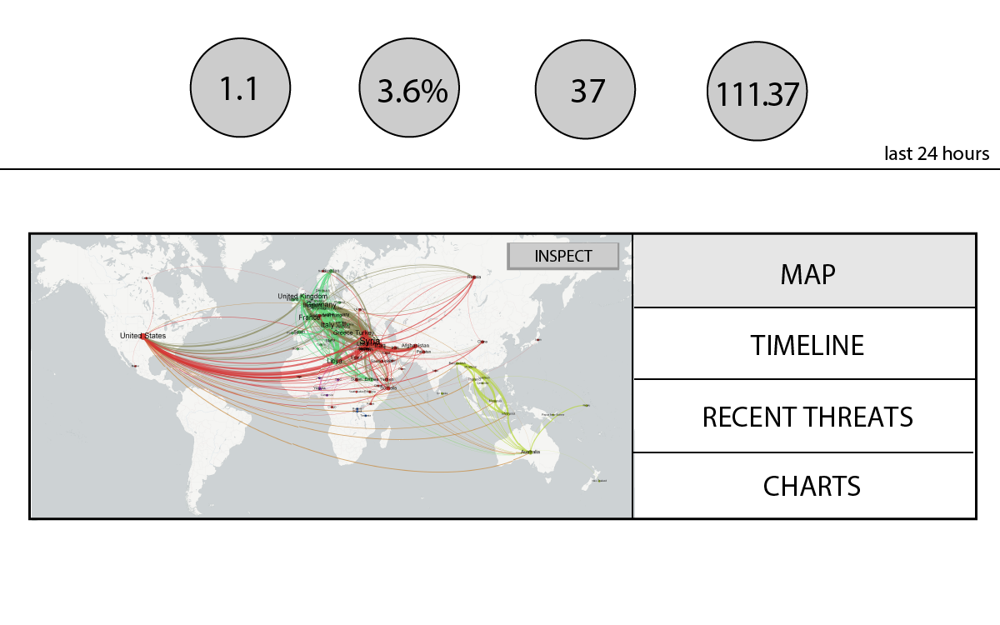
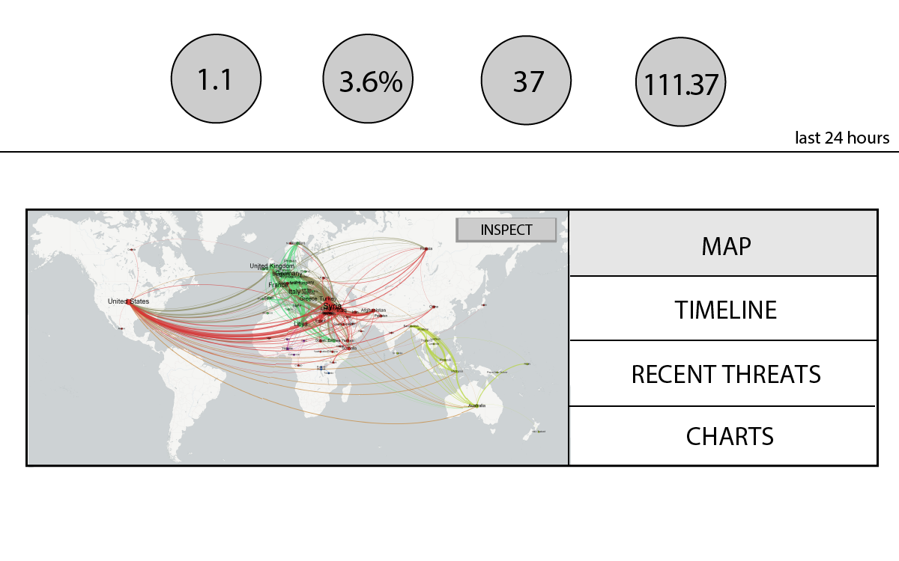
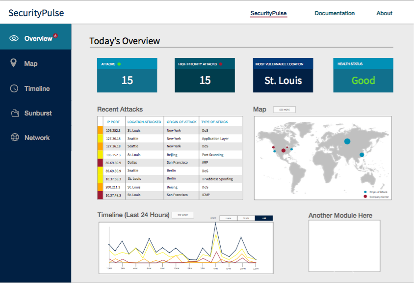
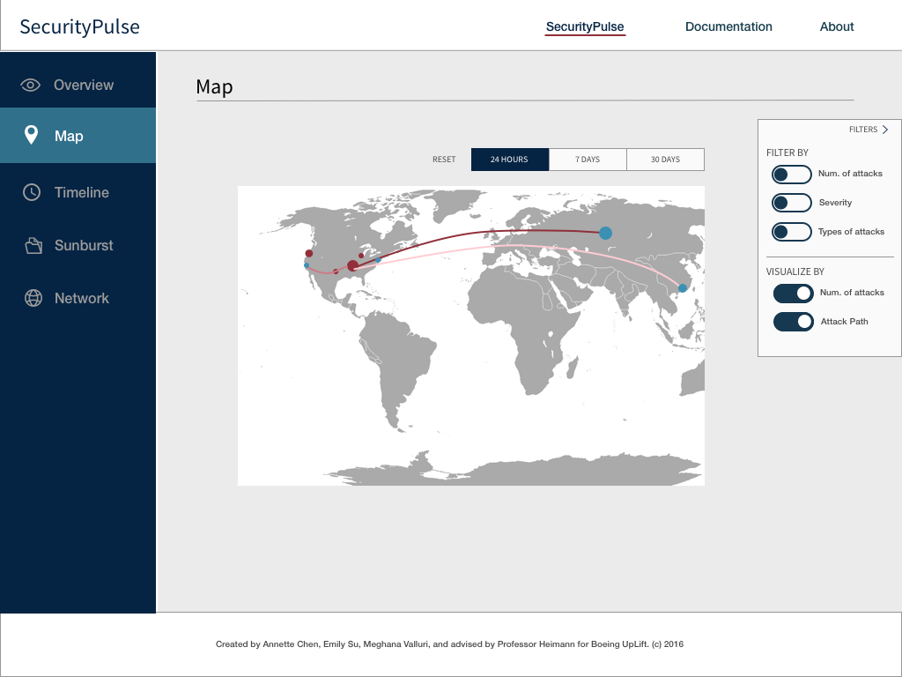
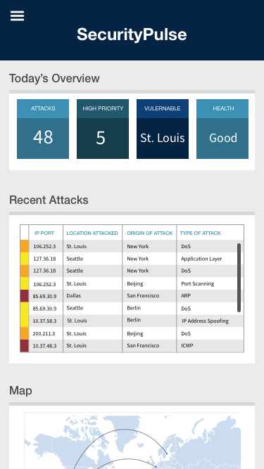
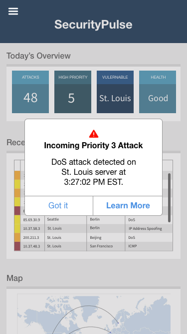

SECURITYPULSE
Role: Product Design Lead
Design Tools: Sketch, Keynote, D3.js
Research Methods: User Interviews
Duration: Mar 2016 - Jun 2016 (3 months)
Team Members: Annette Chang, Meghana Valluri
Project Link: www.securitypulse.tech
This project was created as a submission for Boeing’s IT Case Competition. Left with an open-ended prompt of “use data visualization in the industry sectors of business intelligence or aerospace,” our team conducted initial research of Boeing’s missions and offerings, From that exploration, we decided to design and build a proof of concept security dashboard.
In this 3 month project, I led the design process and front-end development. At the end of the project, I also had some time to design some initial ideas and prototypes of a mobile app version. In August 2016, our project was announced as the winner of the competition, and the recepients of a free trip to visit Boeing headquarters.
Translating Sketches
To hit the ground running, we downloaded and analyzed security data sets to understand what data was available and most applicable for our prototype. Once we identified key attributes those various security data sets, we split off to start sketching wireframes for our dashboard and understand what data visualizations were most suitable for our data.
The team came back with low-fidelity wireframes, and from those quick iterations and the available data, we decided on three main visualization techniques: map, sunburst, and timeline. I then translated those sketches into a digital low fidelity mockup in order to help visualize how effective these elements as a summary home page. These mockups served as a key player in decision making for refining what data we wanted to highlight and showcase to users.

 

Initial wireframes from team members translating into initial medium-fi mockup.
Interviewing Stakeholders
In order to validate and identify user and stakeholder needs, I presented the initial screens to a Boeing IT Project Manager and a Dell security engineer.
Our crucial takeaways from these two meetings were that (1) we needed to clearly identify the dashboard’s target user, besides just focusing on the data, (2) we needed to display our data in a way that moves past simple documentation, and rather provides paths for gaining insight, and (3) exploring notifications and utilizing real-time notifications.
Because of the limited time and resources, we focused on the first two, and did concept exploration with live time notification.
Definining Personas and Use Cases
From the particular discussion with the Dell security engineer, I honed in on developing the persona that would utilize the dashboard and the specific breakdown of the dashboard’s functionality. In research and discovery, I found two main users for such a security dashboard: (1) a security or technology executive and (2) IT manager.
The team concluded that it would be best for our design to incorporate granular modules that could help an IT manager troubleshoot incoming threats, and also include an overview that could inform and update an executive with a quick glance.
Design Takeaways: Importance of Motion and Color
When moving to the high fidelity mockups of the dashboard, I laid out the key elements we had highlighted, and focused on the color and feel. Because Boeing has a strong branding system, I drew inspiration from their color palette, and drew important aspects of the dashboard with brighter, warning colors.
When designing initial prototypes to help the team understand the effectiveness of each data visualization technique and how it would look on a dashboard view, I realized that the challenge with mocking up large sets of data was that there was no way to accurately portray millions of records without actually mocking up every data point, with interactions for every point. If I had more time, I would have tried more advanced prototyping software and integrated that with D3.js for more interactivity and playing with how the interactions of the data visualization could have been more useful and fun to look at.


Hi fidelity mockup of dashboard homepage shown. It was difficult to quickly prototype filtering large amounts of data.
Future Considerations
Real time notifications are imperative for decision making and minimizing damage, and I created some initial screens to start thinking about a mobile app solution as well.
 